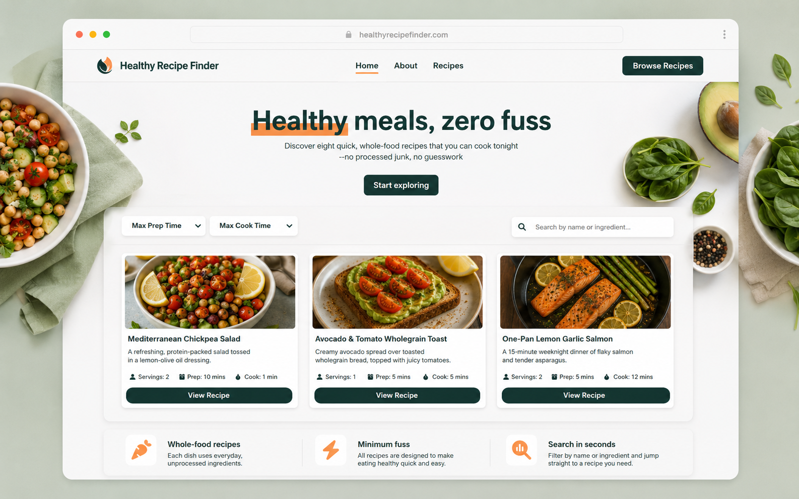

Web Development
I specialize in developing modern and responsive websites using HTML, CSS, and JavaScript with clean and structured code.

Frontend-developer
I am a Front-End Developer specialized in creating responsive and interactive websites. I work with HTML, CSS, and JavaScript to build clean and efficient user interfaces. My goal is to deliver high-quality web experiences that are both functional and visually appealing.
I specialize in developing modern and responsive websites using HTML, CSS, and JavaScript with clean and structured code.
I create fully responsive layouts that work smoothly on all devices including mobile, tablet, and desktop.
I design clean and simple user interfaces that improve usability and provide a better user experience.
I optimize websites by improving code efficiency and reducing load time for faster performance.
I have been continuously improving my front-end development skills by practicing modern web technologies and building responsive websites. I enjoy learning new design techniques and exploring different ways to create clean and user-friendly interfaces.
I worked on several academic and personal projects focused on website structure, responsive layouts, and modern UI design. These projects helped me gain practical experience in writing organized code and developing complete web pages from scratch.
Through continuous practice and project development, I improved my problem-solving skills and gained hands-on experience in front-end development. I always focus on improving performance, responsiveness, and overall user experience.

A responsive hotel website with modern design, navigation menus, and user-friendly sections built using HTML and CSS.
View Project
A modern personal portfolio website designed to showcase my skills, experience, and front-end development projects using clean and responsive layouts.
View Project
A responsive recipe finder website designed to display healthy meals, search recipes, and filter dishes using clean HTML, CSS, and JavaScript.
View Project+972597744666
osama@gmail.com
Gaza, Palestine
www.osama.com